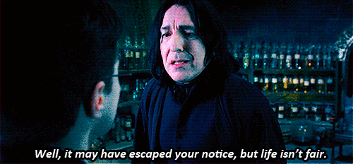

<!DOCTYPE html>
<html>
    <head>
        <meta charset="utf-8">
        <title>PotterScience</title>
        <meta name="description" content="PotterScience">
        <link rel="stylesheet" href="styles.css">
        <link rel="icon" href="star-white.jpg">
    </head>
   
</html>

<body>
    <div class="topnav">
        <a href="index.html"><br>Home</a>
        <a href="facts.html"><br>Facts</a>
        <a href="RantRoom.html"><br>RantRoom</a>
        <a class="active" href="Hogsmeade.html"></a>
      </div>

      <h1 class="Heading1">The Greatest Wizard of All Time</h1>
      <P class="pa" style="text-align: center;">Did you know his most powerful sayings?</P>
      <p class="pb">Albus Percival Wulfric Brian Dumbledore, or more known as Professor Dumbledore is the Headmaster
          of Hogwarts School of Witchcraft and Wizardry. In the books, Dumbledore is more known as a lovely and soft man,
          he was about 150 years old when he first met Harry at school. Dumbledore is one of the people Harry trusted, because he always
          helps Harry anytime Harry needed him. He was then also known as Tom Riddle's former favourite teacher.
          Because of his invincible skills, Dumbledore was targeted by the Minister of Magic as the main threat behind the rising of You-Know-Who.
          Though, not how the books characterized him, actor Michael Gambon portrayed Prof. Dumbledore through the script instead of the books.
          Michael Gambon made Dumbledore to a strong personality and a fierce legendary wizard instead of a soft Dumbledore we knew from the books.
          However, this great wizard was then Avada-Kedavrad in the Harry Potter and the Half-blood Prince series.
          Now, here are some of Dumbledore The Great's great sayings;
          
      </p>
  
  <div>
      
      <br>
      <h4>
  1. "Well, it may have escaped your notice, but life isn't fair."
      </h4>
      <br>
      <p>This quote of his popped up in Harry Potter and The Goblet of Fire both in the books and its movies. 
      This is a real life experience that Severus Snape had to pass through too. 
      Like we stated, Snape was the most misunderstood characterin the world of Harry Potter. </p>
  </div>

</body>